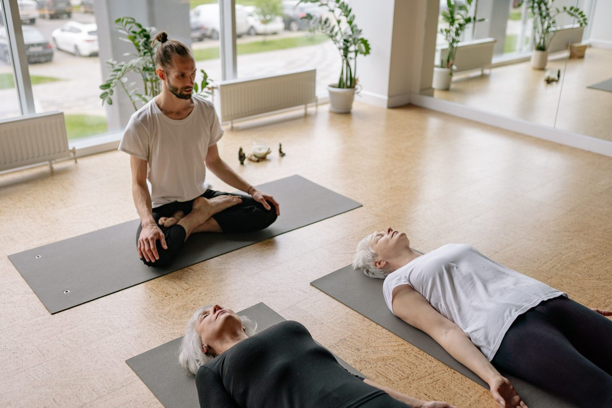

In the studio, in stock photos


Des Moines, Iowa
Shakti Yoga Des Moines offers weekly in-studio and livestream classes, an on-demand class library, and in-person and online special events and workshops, taught by a collective of teachers for all levels. Call for hours and class questions.

Shakti Yoga Des Moines is a yoga studio in Des Moines since 2010, per Three Best Rated. It offers weekly in-studio and livestream classes, an on-demand class library, and in-person and online special events and workshops for all levels, taught by a collective of teachers. Its regular offerings include an Energy Tune Up one Wednesday a month, and a Women's Yoga Retreat to Peru is planned for June 2027. Class offerings require a Marvelous account on the studio site, and no class prices are published in research, so call or email with questions.
1221 Center St, Suite 8, Des Moines, IA 50309
Call for hours